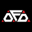
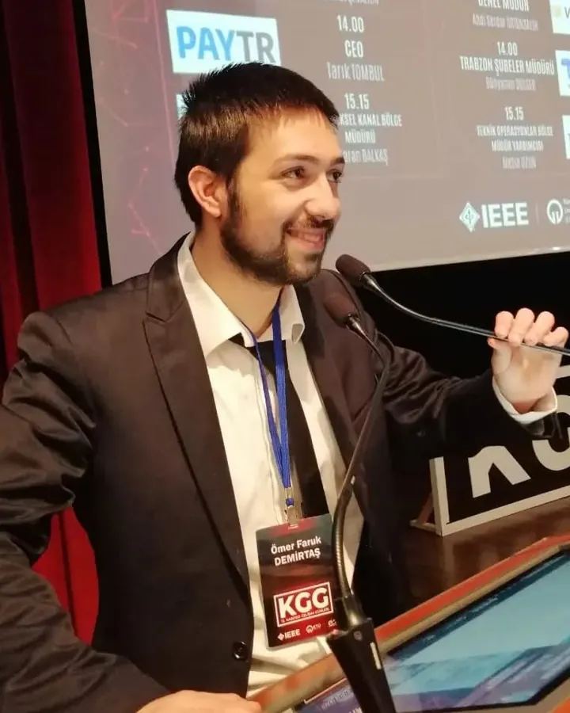

Firmware & MCUs
Bare-metal and RTOS firmware for real-time control.
- C
- C++
- STM32
- ARM Cortex-M
- PIC
- RTOS
- PID control

ÖFDR&D @ Aygün Surgical
// embedded_systems_engineer.init()
Embedded Systems Engineer
I design firmware, PCBs and real-time control systems that bring hardware to life — from surgical motor drivers to quadruped robots.

I'm an Electrical & Electronics Engineer — graduated with Honors (3.34/4.00) from Karadeniz Technical University's 100% English programme — currently working as a Junior R&D Specialist at Aygün Surgical Instruments, where I develop embedded systems for surgical motors and medical devices. In parallel, I'm pursuing my M.Sc. at Ondokuz Mayıs University.
My focus is embedded firmware, real-time control and embedded Linux. I've integrated LiDAR, stereo vision and 5G on an autonomous ground vehicle during my Erasmus+ internship in Portugal, built STM32 motor control over CAN bus and Modbus as a TÜBİTAK researcher, and developed robots ranging from pipe-inspection vehicles to a ROS 2 quadruped.
My goal is to create impactful technology by bridging the gap between hardware and software — combining technical rigor with a bias for building things that actually work.
From schematic to firmware to a robot that moves — the stack I work across.
Bare-metal and RTOS firmware for real-time control.
Prototype circuits, layouts and mechanical integration.
Autonomous platforms, kinematics and perception.
Talking to the rest of the system — and shipping it.
Robots, devices and systems — designed, wired, coded and tested.
Autonomous vehicle that inspects underground water and sewage pipes for cracks, with real-time video streaming and on-board damage analysis using Sobel edge detection.
Quadruped robot built on ROS 2 Humble. Worked on inverse kinematics and motion planning to improve gait efficiency and accuracy.
Autonomous land vehicle designed to support search-and-rescue teams in disaster zones. Top 10 finalist at the Akbank DisasterTech Hackathon.
Handheld device that electronically analyzes tea quality, developed within the TÜBİTAK 2247-C programme.
AI-powered mobile robot on NVIDIA Jetson Nano with autonomous navigation and object detection using deep learning and computer vision.
IoT weather monitoring system that collects and logs environmental data, with cloud integration and a web dashboard for remote monitoring.
Aygün Surgical / Hermann Müller Medizintechnik GmbH
Bold Robotics
İnce Arge Research & Development Ltd.
Ondokuz Mayıs University
Advanced studies with a focus on embedded systems and advanced control systems.
Karadeniz Technical University
Graduated with Honors · GPA 3.34/4.00. Digital systems, microcontrollers and embedded design.
Polytechnic Institute of Cávado and Ave · Portugal
Practical engineering in modern robotics and embedded systems in an international team.
Working on embedded systems, robotics or medical devices? I'm always happy to talk about new projects and opportunities.